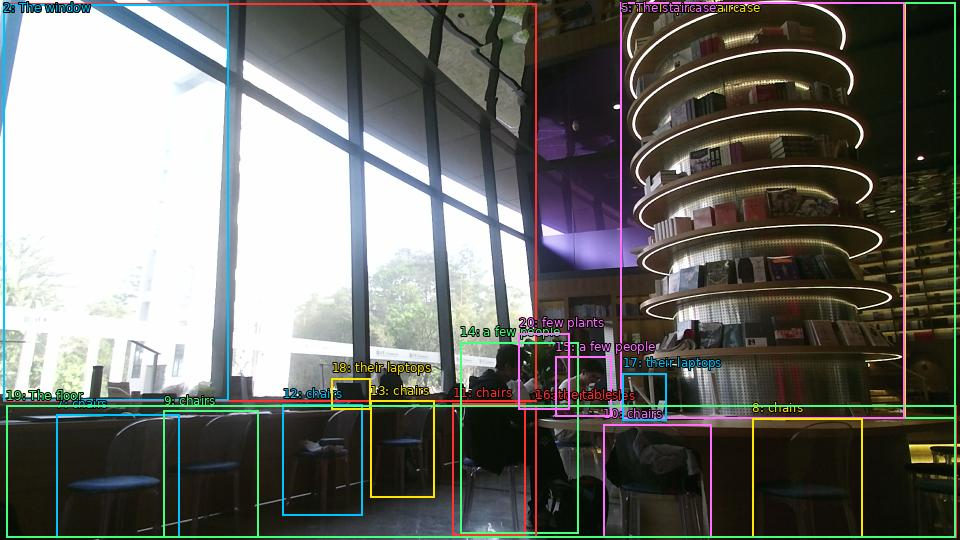

The image shows the interior of a modern library with a large window on the left side. The window offers a view of trees and greenery outside. On the right side of the image, there is a tall spiral staircase made of bookshelves. The staircase is made of metal and has multiple levels, with the top level being the largest and the bottom level being smaller. There are several tables and chairs arranged around the staircase, and a few people are sitting at the tables, working on their laptops. The floor is tiled, and there are a few plants scattered around the space. The overall atmosphere of the library is bright and airy.

Original · Caption raw · Grounding raw · Koordinate
Številke so lokalni ID regije. Dolge slikovne oznake so skrajšane; spodaj so celotne fraze. Napovedane regije se lahko prekrivajo ali opisujejo skupine.
| ID | Celotna fraza | bbox xyxy |
|---|---|---|
| 1 | The window | [3.359999895095825, 3.510000228881836, 536.1599731445312, 401.4900207519531] |
| 2 | The window | [3.359999895095825, 4.050000190734863, 228.95999145507812, 400.4100036621094] |
| 3 | a tall spiral staircase | [620.6400146484375, 2.430000066757202, 905.760009765625, 418.77001953125] |
| 4 | The staircase | [620.6400146484375, 2.9700000286102295, 955.6799926757812, 418.77001953125] |
| 5 | The staircase | [620.6400146484375, 2.430000066757202, 904.7999877929688, 418.77001953125] |
| 6 | several tables | [535.2000122070312, 405.8100280761719, 956.6399536132812, 537.030029296875] |
| 7 | chairs | [56.15999984741211, 414.45001220703125, 179.0399932861328, 537.5700073242188] |
| 8 | chairs | [752.1599731445312, 418.2300109863281, 862.5599975585938, 537.5700073242188] |
| 9 | chairs | [163.67999267578125, 410.6700134277344, 258.7200012207031, 537.030029296875] |
| 10 | chairs | [603.3599853515625, 424.1700134277344, 711.8399658203125, 537.5700073242188] |
| 11 | chairs | [452.6399841308594, 403.1100158691406, 525.5999755859375, 535.4100341796875] |
| 12 | chairs | [282.7200012207031, 404.19000244140625, 362.3999938964844, 515.4299926757812] |
| 13 | chairs | [370.0799865722656, 400.95001220703125, 434.3999938964844, 497.07000732421875] |
| 14 | a few people | [460.3199768066406, 342.09002685546875, 578.3999633789062, 533.25] |
| 15 | a few people | [555.3599853515625, 356.6700134277344, 611.0399780273438, 416.6100158691406] |
| 16 | the tables | [535.2000122070312, 405.27001953125, 956.6399536132812, 537.030029296875] |
| 17 | their laptops | [622.5599975585938, 373.4100036621094, 666.719970703125, 420.9300231933594] |
| 18 | their laptops | [331.67999267578125, 378.27001953125, 370.0799865722656, 409.0500183105469] |
| 19 | The floor | [6.239999771118164, 405.8100280761719, 955.6799926757812, 537.030029296875] |
| 20 | few plants | [518.8800048828125, 333.45001220703125, 569.760009765625, 409.0500183105469] |